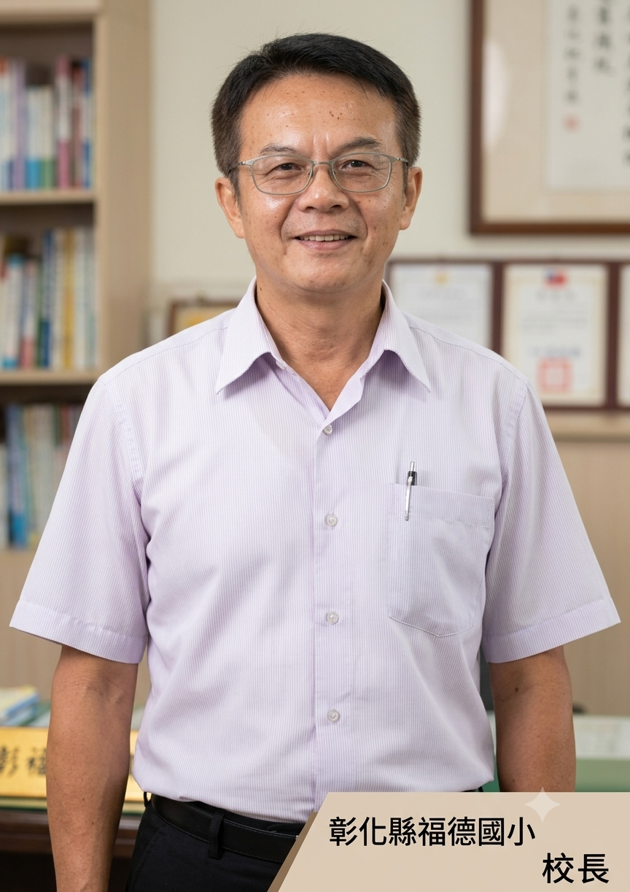
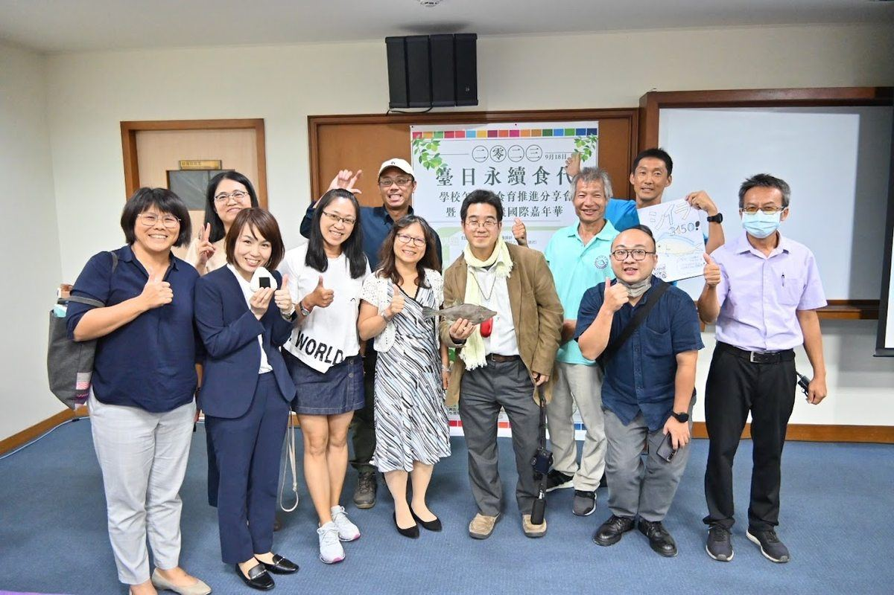
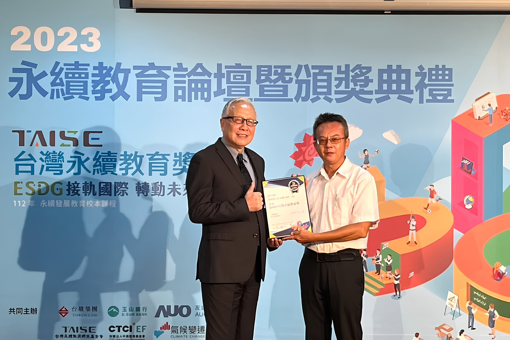

A school named for the blessing of the Land God — where tradition, the earth, and two languages come together in the heart of Yongjing Township.
一所以福德爺庇蔭命名的學校——在永靖鄉的心臟地帶，傳統、土地與雙語在這裡交匯。

Principal

Principal Cho Hung-pin leads Fude Elementary School with a vision shaped by two convictions: that a school must honour the community it comes from, and that children deserve to face the world with confidence in two languages.
The school's name, Fude — "virtue and blessing" — comes from the Land God (福德正神) worshipped at Wufu Temple, whose side rooms sheltered Fude's very first classrooms in 1965. Under Principal Cho's leadership, this deep community spirit has been woven into every strand of school life: the drum-dance troupe (跳鼓陣) that senior students teach to juniors one-on-one; the soybean food-education project that follows a seed from the field in Beidou to tofu on the table; and the community reading station where children and families explore English picture books alongside local nature and sustainability stories.
Under his guidance, Fude has earned the KDP International Award for School Innovation, taken gold at the International Schools CyberFair, and brought home the national trophy in folk-arts performance — carrying the spirit of Yongjing's temple culture to stages far beyond the village.
卓鴻賓校長帶領福德國小，以兩個信念為核心：學校必須尊重它所來自的社區，孩子也值得用兩種語言自信地面對世界。
「福德」二字，源自五福宮主神福德正神的庇蔭——1965 年，地方福德爺會出資借用廟宇偏殿，讓福德最初的教室有了容身之所。在卓校長帶領下，這份深厚的社區精神融入了校園生活的每個角落：跳鼓陣由高年級親自帶著低年級一對一傳藝；黃豆食農計畫讓孩子從北斗田間播種，到在地工坊做豆花，再端上桌品嚐；社區共讀站讓孩子與家長在書本旁，探索英文繪本與在地永續故事。
在他的領導下，福德國小榮獲 KDP 國際認證獎、網界博覽會金牌，並在全國民俗技藝競賽中奪冠——把永靖廟會文化的精神，帶上全國舞台。
Virtue · Roots · Vitality · Bilingual · Future — the five pillars that guide every decision at Fude Elementary.
品德・在地・活力・雙語・未來——引導福德每一個辦學決定的五大支柱。
We welcome educators, researchers, parents, and friends to visit our campus in Yongjing Township — where a temple's blessing became a community school, and where children learn through tradition, nature, and two languages.
我們歡迎教育工作者、研究人員、家長及各界朋友蒞臨永靖福德國小——這是一所從廟宇庇蔭中誕生的社區學校，孩子在這裡用傳統、土地與雙語一起學習。